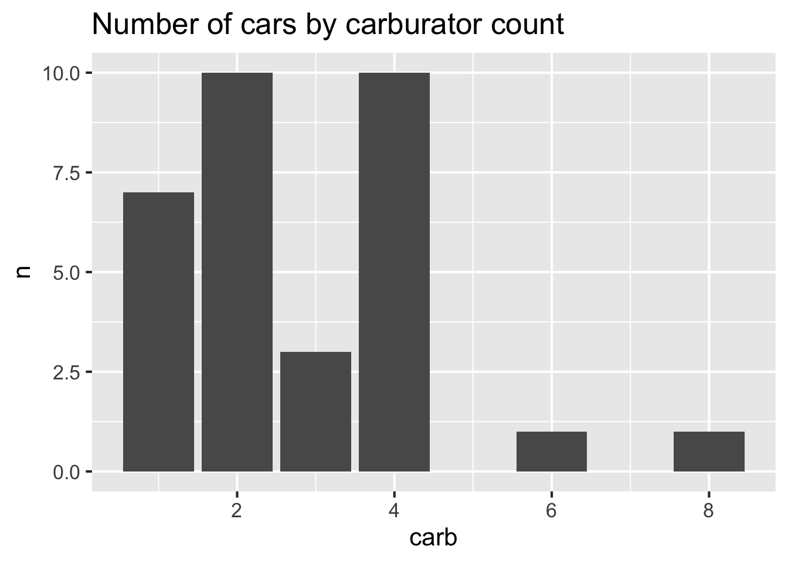

![]()
library(tidyverse)
library(ggrough)So I came across another ggplot2 package which I like. It bootstraps off of a javascript library called roughjs. I like that you can make graphs and charts that look handdrawn. This is a great feature when doing data communication. It makes the look less clinical which might be a good tactic when doing a data visualisation clinic where the focus is on the chart type and how it communicates.
Warm and friendly is a good approach when doing these types of trainings with graphical neophytes.
The package information is here
Some examples of their code are below:
count(mtcars, carb) %>%
ggplot(aes(carb, n)) +
geom_col() +
labs(title="Number of cars by carburator count") +
theme_grey(base_size = 16) -> p
p
options <- list(
Background=list(roughness=8),
GeomCol=list(fill_style="zigzag", angle_noise=0.5, fill_weight=2))
p2<-get_rough_chart(p, options)
p2Reuse
Citation
BibTeX citation:
@online{dewitt2018,
author = {Michael DeWitt},
title = {Ggrough},
date = {2018-07-05},
url = {https://michaeldewittjr.com/programming/2018-07-05-ggrough-a-good-way-make-graphics-look-user-generated},
langid = {en}
}
For attribution, please cite this work as:
Michael DeWitt. 2018. “Ggrough.” July 5, 2018. https://michaeldewittjr.com/programming/2018-07-05-ggrough-a-good-way-make-graphics-look-user-generated.